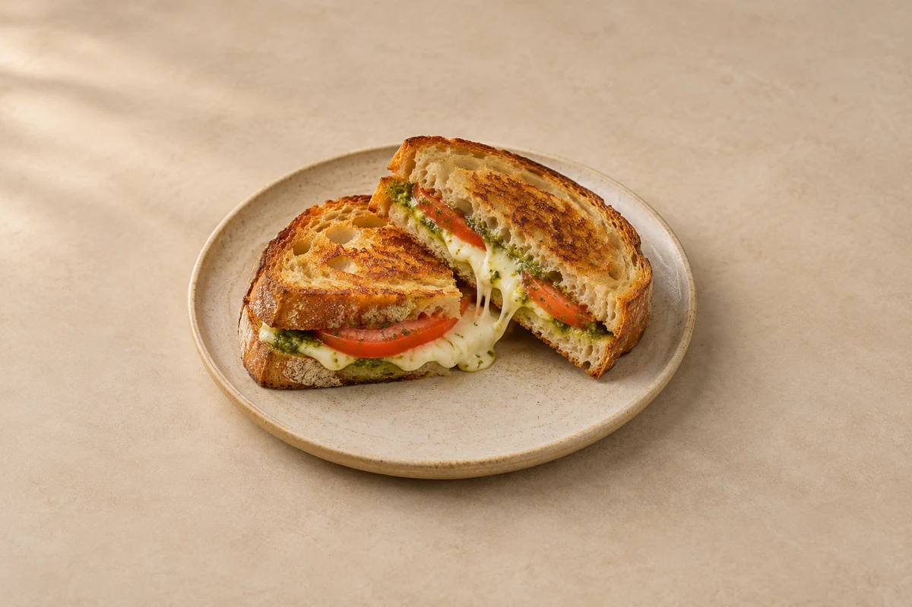

Lunches
Mozzarella Pesto Toasties
Golden sourdough toasties with melted mozzarella, basil pesto and tomato. Serves 2.
Prep10 mins
Cook10 mins
people
Ingredient quantities update automatically

Ingredients
Ingredients
Method
Dry the filling
Pat the mozzarella and tomato slices dry with kitchen paper so the toasties do not become soggy.Spread the pesto
Spread the pesto over the inside faces of the bread slices.Fill the sandwiches
Divide the mozzarella and tomato between half the slices. Add black pepper and close with the remaining bread.Butter the outside
Spread the softened butter thinly over the outside faces of each sandwich.Toast gently
Heat a non-stick frying pan over a medium-low heat. Cook the sandwiches for 3–4 minutes per side, pressing gently, until golden. Cover briefly with a lid if the cheese needs help melting, keeping the heat low enough that the bread does not burn.Serve
Rest for 1 minute, then cut in half and serve while the mozzarella is melted.